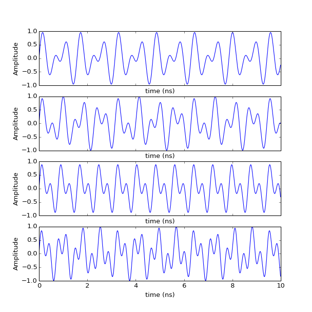
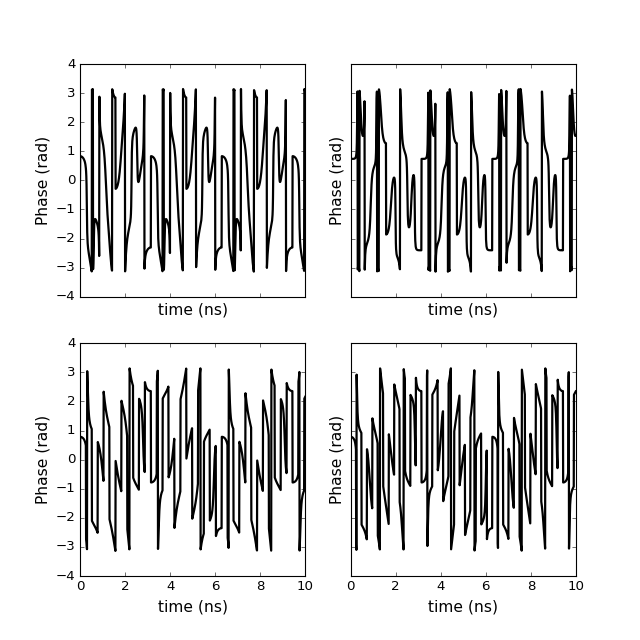

pylayers.util.plotutil.mulcplot¶
- pylayers.util.plotutil.mulcplot(x, y, **kwargs)[source]¶
handling multiple complex variable plots
Parameters: x : ndarray (,N)
y : ndarray (M,N)
typ : string
‘m’ : modulus ‘v’ : value ‘l10’ : dB (10 log10) ‘l20’ : dB (20 log10) ‘d’ : phase degrees ‘r’ : phase radians ‘du’ : phase degrees unwrap ‘ru’ : phase radians unwrap ‘gdn’ : group delay (ns) ‘gdm’ : group distance (m) ‘re’ : real part ‘im’ : imaginary part
ncol : int
number of columns
nlin : int
number of lines
Notes
Here fig and ax are numpy arrays of matplotlib fig and ax
If len(y.shape) > 2 the two first axes are used as nlin and ncol this takes the priority over the passed values nlin and ncol
Examples
>>> import numpy as np >>> import pylayers.util.plotutil as plu >>> x = np.arange(0,10,.01) >>> z1 = np.cos(2*x)*np.sin(10*x) + 1j * np.cos(3*x)*np.sin(11*x) >>> z2 = np.cos(3*x)*np.sin(11*x) + 1j * np.cos(4*x)*np.sin(10*x) >>> z3 = np.cos(4*x)*np.sin(12*x) + 1j * np.cos(5*x)*np.sin(12*x) >>> z4 = np.cos(5*x)*np.sin(13*x) + 1j * np.cos(6*x)*np.sin(13*x) >>> y = np.vstack((z1,z2,z3,z4)) >>> plu.mulcplot(x,y) >>> plt.show()
(Source code, png, hires.png, pdf)

>>> plu.mulcplot(x,y,typ='v',) >>> plt.show()
>>> plu.mulcplot(x,y,typ='r',ncol=2,nlin=2,color='k',linewidth=2) >>> plt.show()

{kind=link}
{kind=link}
{kind=link}
{kind=link}
{kind=link}
{kind=link}